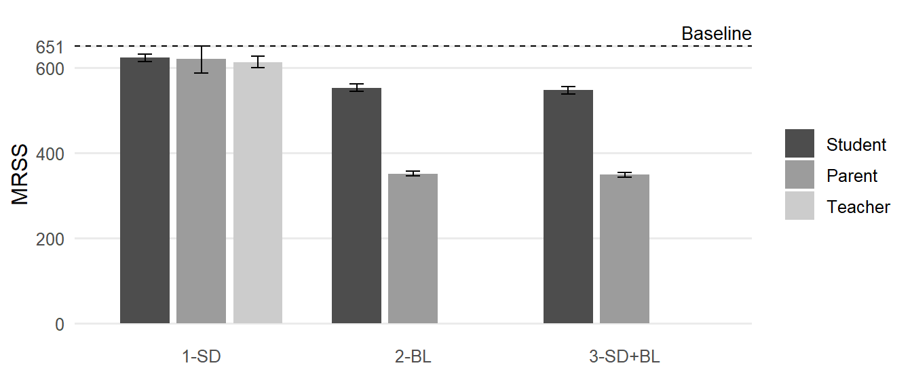
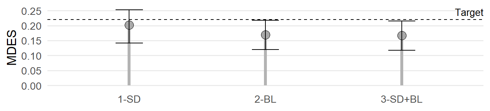

# -- Load packages
# Data handling
library(dplyr)
library(tidyr)
library(purrr)
# Table processing and plotting
library(knitr)
library(ggplot2)
# Power analysis
library(PowerUpR)OSM B: Application
This demo presents two scenarios illustrating how our design parameters are applied in power analyses when planning randomized intervention studies on students’ SEL outcomes. We demonstrate how to determine
- the minimum required sample size (MRSS), illustrated by the example of a single-level individually randomized trial (IRT)
- the minimum detectable effect size (MDES), illustrated by the example of a three-level cluster randomized trial (CRT)
Prerequisites
R Setup
We showcase power analysis in R using the package PowerUpR (Bulus et al., 2021). It implements the power formulas given in Dong and Maynard (2013). Specifically, we use the functions mrss.ira() to calculate the MRSS in Scenario 1 and mdes.cra3() to calculate the MDES in Scenario 2 for the main treatment effect. Researchers may also use the companion PowerUpR shiny app (Ataneka et al., 2023) or the Excel tool PowerUp! (Dong et al., 2015). Note that there are several other appropriate software solutions for planning IRTs and CRTs, such as Optimal Design (Spybrook et al., 2011).
Assumptions
For each scenario, we assume a balanced design where students (Scenario 1) or schools (Scenario 2) are randomly assigned to experimental conditions in equal shares (i.e., 50% of the sample in the treatment group and 50% in the control group). Further, we set the desired power at 80% (1-β = 0.80) and use a two-tailed test with Type I error rate of 5% (α = 0.05) which allows testing of potentially unexpected negative effects of the intervention on the outcome. Note that these assumptions correspond to the default settings in PowerUpR.
Scenario 1: IRT
A lab-based IRT on outcomes across multiple contexts and domains in elementary school
A research team has developed an universal intervention to promote elementary students’ SEL outcomes across multiple contexts and domains. The team plans a single-level lab-based randomized experiment to test whether the new approach is effective under controlled lab conditions across different assessment methods.
The researchers expect a treatment effect of a size typically reported for previous randomized experiments on SEL outcomes. The meta-analysis by Wilson et al. (2025, Table 2) suggests that the average standardized mean differences (SMD) across social and behavioral outcomes lie in the range 0.07 ≤ SMD ≤ 0.35, with a median of Mdn(SMD) = 0.22. The research team therefore considers a treatment effect of this size on students’ SEL outcomes plausible and meaningful. The researchers thus conduct power analyses to determine the required number of students that should be sampled to ensure their IRT can detect a minimum detectable effect size of MDES = 0.22 (with 1-β = 0.80 and α = 0.05 in a two-tailed test).
# set the MDES
es_1l <- .22Baseline Design without Covariates
In a first setup, the research team considers a design without covariates.
# apply PowerUpR::mrss.ira()
mrss.ira(
es=es_1l, # MDES
power=.80, # Power; default: 80%
alpha=.05, # Probability of Type I error; default: 5%
two.tailed=TRUE, # Hypothesis test; default: two-tailed
p=.50, # Proportion of students in the treatment group; default: 50%
n0=10, # Starting value for finding the sample size; default: 10
tol=.10, # Tolerance of iterations for finding the sample size; default: 0.1
g1=0, # Number of covariates; default: 0
r21=0 # Proportion of explained variance by covariates; default: 0
)n = 651 The MRSS equals 651. Therefore, in total, N = 651 students are required to achieve MDES = 0.22 when omitting covariates. Hence, the researchers would have to randomly assign n = 326 students to the treatment group and n = 326 students to the control group.
Designs with Covariates
In a second setup, the research team would like to test the impact of different covariate sets (in terms of R2Total) on the required sample size. Because the intervention targets SEL outcomes across multiple domains and contexts (as opposed to a specific measure), the researchers rely on the meta-analytic summaries of the design parameters. Specifically, they consult the results of MA-1 with student self-reports, parent reports, and teacher reports in elementary school. (Note that design parameters are not available for teacher reports in Model Set 2-BL and Model Set 3-SD+BL.)
Moreover, the team intends to take into account the statistical uncertainty associated with the estimated design parameters. For this purpose, the researchers determine conservative upper/liberal lower bounds for the MRSS by drawing on the respective lower/upper bound estimates of the 95% CIs of the meta-analytic averages of R2Total.
# load meta-analytic summaries
load(url("https://raw.githubusercontent.com/sophiestallasch/sel-designparams/main/data/dp_ma.pub.rda"))If you encounter any issues, click here to download the .rda file and load it manually into R.
dp_1l <- dp_ma %>%
# select relevant design parameters
filter(Type == "MA-1",
Population == "Total",
Design == "1L-D",
Edu.level == "Elementary") %>%
# select relevant columnns
select(Method, Set, n_Covariates, Parameter, Average, starts_with("CI"))Table 1 shows all design parameters applied in the power analyses.
Code
# inspect selected design parameters
kable(dp_1l %>%
mutate(across(c(Average:CI.ub), ~sprintf("%.2f", .))))| Method | Set | n_Covariates | Parameter | Average | CI.lb | CI.ub |
|---|---|---|---|---|---|---|
| Student | 2-BL | 1 | R2_Total | 0.15 | 0.14 | 0.16 |
| Student | 3-SD+BL | 6 | R2_Total | 0.16 | 0.15 | 0.17 |
| Student | 1-SD | 5 | R2_Total | 0.04 | 0.03 | 0.05 |
| Parent | 2-BL | 1 | R2_Total | 0.46 | 0.45 | 0.47 |
| Parent | 3-SD+BL | 6 | R2_Total | 0.46 | 0.46 | 0.47 |
| Parent | 1-SD | 5 | R2_Total | 0.05 | 0.00 | 0.10 |
| Teacher | 1-SD | 5 | R2_Total | 0.06 | 0.04 | 0.08 |
Using these estimates, the research team systematically studies how the various covariate sets influence the MRSS.
# prepare database
dp_1l <- dp_1l %>%
pivot_longer(c(Average:CI.ub),
names_to = "statistic", values_to = "r2_total")# custom function to vectorize PowerUpR::mrss.ira() across varying model sets
vectorize_mrss.ira <- function(g1, r21, ...) {
parms <- list(es = es_1l, g1 = g1, r21 = r21)
d_out <- exec(getFromNamespace("mrss.ira", ns = "PowerUpR"), !!!parms)
d_out$n
}
# apply vectorize_mrss.ira()
d_1l <- dp_1l %>%
mutate(mrss = map2_dbl(n_Covariates, r2_total, vectorize_mrss.ira))# clean and reshape results
d_1l <- d_1l %>%
select(Method, Set, statistic, mrss) %>%
mutate(statistic = case_match(statistic,
"Average" ~ "MRSS",
"CI.lb" ~ "MRSS conservative",
"CI.ub" ~ "MRSS liberal")) %>%
pivot_wider(names_from = statistic, values_from = mrss) %>%
arrange(Method, Set)Table 2 lists the results; Figure 1 visualizes them.
Code
# show results
kable(d_1l)| Method | Set | MRSS | MRSS conservative | MRSS liberal |
|---|---|---|---|---|
| Student | 1-SD | 624 | 633 | 615 |
| Student | 2-BL | 553 | 562 | 545 |
| Student | 3-SD+BL | 548 | 556 | 539 |
| Parent | 1-SD | 621 | 651 | 588 |
| Parent | 2-BL | 352 | 358 | 347 |
| Parent | 3-SD+BL | 349 | 354 | 344 |
| Teacher | 1-SD | 614 | 627 | 601 |
Code
ggplot(d_1l, aes(x = Set, y = MRSS, fill = Method)) +
geom_hline(yintercept = d_1l.0$n, linetype = "dashed") +
geom_col(position = position_dodge(width = 0.8, preserve = "single"), width = 0.7) +
geom_errorbar(
aes(ymin = `MRSS conservative`, ymax = `MRSS liberal`),
position = position_dodge(width = 0.8, preserve = "single"),
width = 0.2
) +
scale_y_continuous(breaks = c(seq(0, 600, 200), d_1l.0$n), limits = c(NA, 700)) +
scale_fill_grey(start = 0.3, end = 0.8) +
labs(y = "MRSS") +
theme_minimal(base_size = 12) +
theme(
panel.grid.major.x = element_blank(),
panel.grid.minor = element_blank(),
axis.title.x = element_blank(),
legend.title = element_blank()
) +
annotate(
"text", x = Inf, y = d_1l.0$n, label = "Baseline",
size = 3.5, hjust = 1, vjust = -0.5
)

Figure 1 shows that adding covariates can substantially reduce the MRSS. As detailed in Table 2, entering the point estimates of R2Total into the power formula results in total sample size requirements of 614 ≤ N ≤ 624 when controlling for Set 1-SD, 352 ≤ N ≤ 553 when controlling for Set 2-BL, and 349 ≤ N ≤ 548 when controlling for Set 3-SD+BL, depending on the assessment method. Using the lower bound estimates of the 95% CI of R2Total, and thus, following a conservative approach, the MRSS varies between N = 354 (Parent, 3-SD+BL) and N = 651 (Parent, 1-SD). In contrast, using the respective upper bound estimates to adopt a rather optimistic liberal approach, the MRSS varies between N = 344 (Parent, 3-SD+BL) and N = 615 (Student, 1-SD).
To conclude, if covariates cannot be included, a total of N = 651 elementary students are necessary to achieve MDES = 0.22. However, when covariates are included in the design, the required sample size depends on the team’s risk preferences. For example, if they opted for a conservative approach by assessing both sociodemographic characteristics and a pretest, the researchers should recruit at least N = 556/354 students to adequately power their IRT to detect SMD = 0.22 based on student self-reports/parent ratings.
Scenario 2: CRT
A field three-level CRT on enjoyment of learning among Grade 4 students
The research team found that their intervention improved 4th graders’ self-reported enjoyment of learning with SMD = 0.22. The team plans a large-scale trial to evaluate whether the intervention is also effective when implemented by teachers in regular classroom settings. To avoid unintentionally exposing the control group to the intervention, the researchers want to carry out a three-level cluster-randomized trial, where whole schools will be randomized to experimental conditions. 80 schools will participate in the study. From each of these schools, the team intends to sample 2 classrooms, with 20 students per classroom. Given this sample size, the researchers want to determine whether their CRT achieves MDES = 0.22 (with 1-β = .80 and α = .05 in a two-tailed test). Since the intervention targets a specific measure, the team enters the point estimates for the design parameters into their power calculations.
Again, the researchers allow for the statistical uncertainty associated with the estimated design parameters. They determine conservative upper/liberal lower bound estimates for the MDES by drawing on the respective upper/lower bounds of the 95% CIs of the ICCs and the respective lower/upper bounds of the 95% CIs of the R2 values.
# set the sample size
n_3l = 20 # Number of students per classroom
J_3l = 2 # Number of classrooms per school
K_3l = 80 # Number of schools# load point estimates
load(url("https://raw.githubusercontent.com/sophiestallasch/sel-designparams/main/data/dp_pe.pub.rda"))If you encounter any issues, click here to download the .rda file and load it manually into R.
dp_3l <- dp_pe %>%
# select relevant design parameters
filter(Population == "Total",
Design == "3L-D",
Edu.level == "Elementary",
Grade == 4,
Method == "Student",
Measure == "Enjoyment of learning") %>%
# calculate 95% CIs
mutate(CI.lb = Estimate - 1.96*SE,
CI.ub = Estimate + 1.96*SE) %>%
# truncate to [0,1], if necessary
mutate(across(starts_with("CI"), ~ pmax(0, pmin(1, .)))) %>%
# select relevant columns
select(Set, n_Covariates, Parameter, Estimate, starts_with("CI"))Table 3 shows all design parameters applied in the power analyses.
Code
# inspect selected design parameters
kable(dp_3l %>%
mutate(across(c(Estimate, starts_with("CI")), ~sprintf("%.2f", .))))| Set | n_Covariates | Parameter | Estimate | CI.lb | CI.ub |
|---|---|---|---|---|---|
| 0 | 0 | ICC_Classroom | 0.08 | 0.03 | 0.12 |
| 0 | 0 | ICC_School | 0.05 | 0.02 | 0.08 |
| 1-SD | 5 | R2_Student | 0.06 | 0.05 | 0.07 |
| 1-SD | 5 | R2_Classroom | 0.02 | 0.00 | 0.04 |
| 1-SD | 5 | R2_School | 0.14 | 0.06 | 0.22 |
| 2-BL | 1 | R2_Student | 0.21 | 0.19 | 0.23 |
| 2-BL | 1 | R2_Classroom | 0.27 | 0.21 | 0.34 |
| 2-BL | 1 | R2_School | 0.48 | 0.36 | 0.59 |
| 3-SD+BL | 6 | R2_Student | 0.23 | 0.21 | 0.25 |
| 3-SD+BL | 6 | R2_Classroom | 0.28 | 0.21 | 0.35 |
| 3-SD+BL | 6 | R2_School | 0.50 | 0.39 | 0.61 |
Baseline Design without Covariates
Again, in a first setup, the research team considers a design without covariates.
# point estimates
mdes.cra3(
power=.80, # Power; default: 80%
alpha=.05, # Probability of Type I error; default: 5%
two.tailed=TRUE, # Hypothesis test; default: two-tailed
p=.50, # Proportion of students in the treatment group; default: 50%
rho2 = .08, # Between-classroom differences (ICC_Classroom)
rho3 = .05, # Between-school differences (ICC_School)
g3=0, # Number of covariates; default: 0
r21=0, # Proportion of explained variance by covariates at the student level (R2_Student); default: 0
r22=0, # Proportion of explained variance by covariates at the classroom level (R2_Classroom); default: 0
r23=0, # Proportion of explained variance by covariates at the school level (R2_School); default: 0
n = n_3l, # Number of students per classroom
J = J_3l, # Number of classrooms per school
K = K_3l # Number of schools
)
Minimum detectable effect size:
---------------------------------------
0.212 95% CI [0.063,0.361]
---------------------------------------
Degrees of freedom: 78
Standardized standard error: 0.075
Type I error rate: 0.05
Type II error rate: 0.2
Two-tailed test: TRUE# ICCs: upper bound of the 95% CIs = conservative
mdes.cra3(rho2 = .12, rho3 = .08, n = n_3l, J = J_3l, K = K_3l)
Minimum detectable effect size:
---------------------------------------
0.254 95% CI [0.076,0.432]
---------------------------------------
Degrees of freedom: 78
Standardized standard error: 0.089
Type I error rate: 0.05
Type II error rate: 0.2
Two-tailed test: TRUE# ICCs: lower bound of the 95% CIs = liberal
mdes.cra3(rho2 = .03, rho3 = .02, n = n_3l, J = J_3l, K = K_3l)
Minimum detectable effect size:
---------------------------------------
0.154 95% CI [0.046,0.262]
---------------------------------------
Degrees of freedom: 78
Standardized standard error: 0.054
Type I error rate: 0.05
Type II error rate: 0.2
Two-tailed test: TRUEWhen not using covariates, the MDES equals 0.21 with the point estimates, 0.25 with the upper bound estimates of the 95% CIs, and 0.15 with the lower bound estimates of the 95% CIs of the ICCs. Consequently, K = 80 schools would suffice to achieve an MDES of 0.22—provided the researchers adopt a liberal (but potentially risky) approach to power analysis. To ensure the robustness of the design, they proceed to systematically examine how different covariate sets influence the MDES.
# prepare database
dp_3l <- dp_3l %>%
pivot_longer(c(Estimate:CI.ub),
names_to = "statistic", values_to = "r2") %>%
pivot_wider(names_from = Parameter, values_from = r2) %>%
# ICC: upper bound of the 95% CI + R2: lower bound of the 95% CI = conservative
# ICC: lower bound of the 95% CI + R2: upper bound of the 95% CI = liberal
mutate(approach = case_when(
statistic == "Estimate" ~ "MDES",
Set == "0" & statistic == "CI.lb" ~ "MDES liberal",
Set == "0" & statistic == "CI.ub" ~ "MDES conservative",
Set != "0" & statistic == "CI.lb" ~ "MDES conservative",
Set != "0" & statistic == "CI.ub" ~ "MDES liberal"))
# extract ICCs
icc <- dp_3l %>%
filter(Set == "0") %>%
select(approach, starts_with("ICC"))
dp_3l <- dp_3l %>%
# fill in ICCs for covariate model sets
left_join(icc, by = "approach", suffix = c("_", "")) %>%
select(Set, n_Covariates, approach, starts_with("ICC"), starts_with("R2"), -ends_with("_")) %>%
# remove Model Set 0
filter(Set != "0")# custom function to vectorize PowerUpR::mdes.cra3() across varying model sets
vectorize_mdes.cra3 <- function(rho2, rho3, g3, r21, r22, r23, ...) {
parms <- list(
rho2 = rho2, rho3 = rho3,
g3 = g3,
r21 = r21, r22 = r22, r23 = r23,
n = n_3l, J = J_3l, K = K_3l
)
d_out <- exec(getFromNamespace("mdes.cra3", ns = "PowerUpR"), !!!parms)
d_out$mdes[1]
}
# apply vectorize_mdes.cra3()
d_3l <- dp_3l %>%
mutate(mdes = pmap_dbl(
list(
ICC_Classroom, ICC_School, n_Covariates, R2_Student, R2_Classroom, R2_School
),
vectorize_mdes.cra3))# clean and reshape results
d_3l <- d_3l %>%
select(-starts_with(c("ICC", "R2"))) %>%
pivot_wider(names_from = approach, values_from = mdes)Table 4 lists the results; Figure 2 visualizes them.
Code
# show results
kable(d_3l %>%
mutate(across(contains("MDES"), ~sprintf("%.2f", .))))| Set | n_Covariates | MDES | MDES conservative | MDES liberal |
|---|---|---|---|---|
| 1-SD | 5 | 0.20 | 0.25 | 0.14 |
| 2-BL | 1 | 0.17 | 0.22 | 0.12 |
| 3-SD+BL | 6 | 0.17 | 0.21 | 0.12 |
Code
ggplot(d_3l, aes(x = Set, y = `MDES`)) +
geom_hline(yintercept = es_1l, linetype = "dashed") +
geom_segment(aes(xend = Set, y = 0, yend = `MDES`), color = "grey70", linewidth = 1.5) +
geom_point(aes(y = `MDES`), size = 4, color = "black", fill = "darkgrey", shape = 21) +
geom_errorbar(
aes(ymin = `MDES conservative`, ymax = `MDES liberal`),
width = 0.2
) +
labs(y = "MDES") +
theme_minimal(base_size = 13) +
theme(
panel.grid.major.x = element_blank(),
panel.grid.minor = element_blank(),
axis.title.x = element_blank(),
legend.title = element_blank()
) +
annotate(
"text", x = Inf, y = es_1l, label = "Target",
size = 3.5, hjust = 1, vjust = -0.5
)

Figure 2 illustrates that covariates can indeed lower the MDES. Table 4 shows that by applying the point estimates, 0.17 ≤ MDES ≤ 0.20, depending on the covariate set. Entering the upper bound estimates of the 95% CIs of the ICCs plus the lower bound estimates of the 95% CIs of the R2s under a conservative approach, the MDES varies between MDES = 0.21 and MDES = 0.25. In contrast, using the respective the lower bound estimates of the 95% CIs of the ICCs in combination with the upper bound estimates of the 95% CIs of R2s under a liberal approach, the MDES varies between MDES = 0.12 and MDES = 0.14.
In summary, with a fixed maximum of K = 80 schools in total, the research team should at least consider adding a baseline measure, hence, to pretest students’ enjoyment of learning, given statistical uncertainty. If doing so, the researchers can be confident that the sample size of their CRT will be large enough to detect SMD = 0.22 based on student self-reports.
References
Ataneka, A., Kelcey, B., Dong, N., Bulus, M., & Bai, F. (2023). PowerUpR Shiny App 0.9 manual. https://www.causalevaluation.org/uploads/7/3/3/6/73366257/r_shinnyapp_manual_0.9.pdf
Bulus, M., Dong, N., Kelcey, B., & Spybrook, J. (2021). PowerUpR: Power analysis tools for multilevel randomized experiments. R package version 1.1.0. https://CRAN.R-project.org/package=PowerUpR
Dong, N., Kelcey, B., Maynard, R., & Spybrook, J. (2015). PowerUp! Tool for power analysis. www.causalevaluation.org
Dong, N., & Maynard, R. (2013). PowerUp!: A tool for calculating minimum detectable effect sizes and minimum required sample sizes for experimental and quasi-experimental design studies. Journal of Research on Educational Effectiveness, 6(1), 24–67. https://doi.org/10.1080/19345747.2012.673143
Spybrook, J., Bloom, H., Congdon, R., Hill, C., Martinez, A., & Raudenbush, S. (2011). Optimal design plus empirical evidence: Documentation for the "Optimal Design" software. https://wtgrantfoundation.org/wp-content/uploads/2015/11/OD-Documentation-V3.pdf